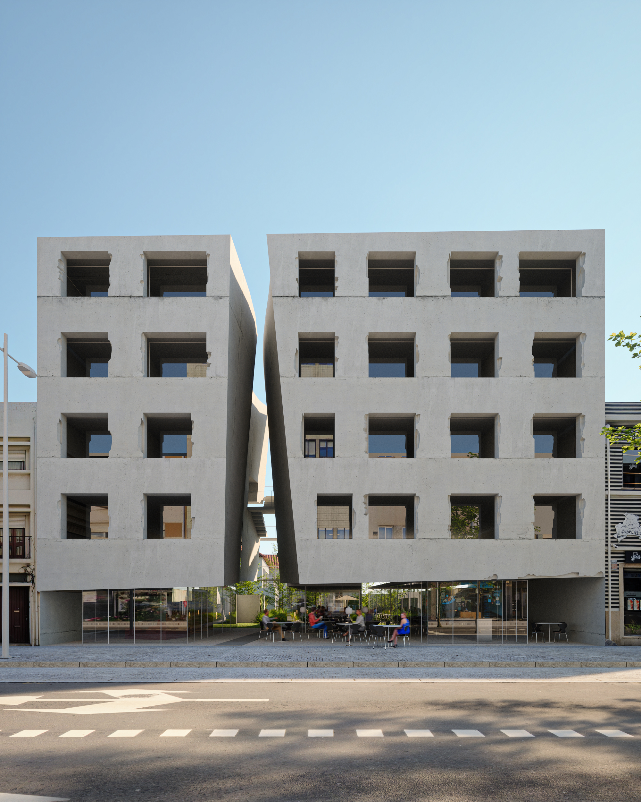
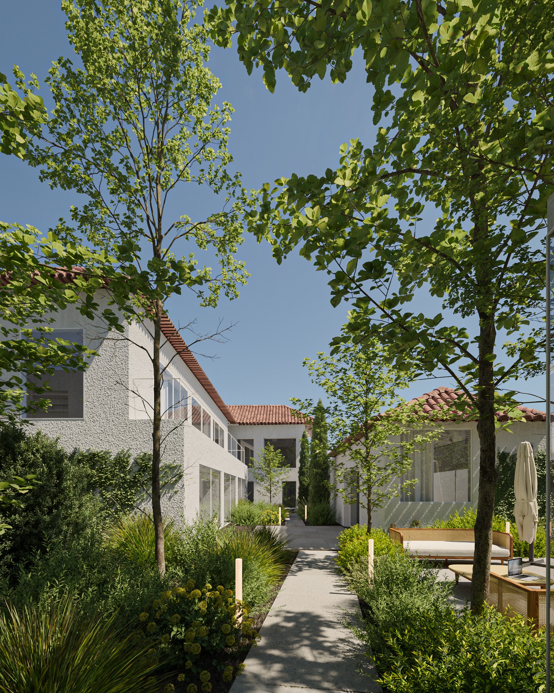

Galeria de Imagens





Uma forma de arte inspira uma nova forma de viver.
Matosinhos, Portugal
Oceam representa o conceito live, work and play, um ecossistema vivo que tira o melhor partido de tudo aquilo que a cidade tem para oferecer e que promete revolucionar a forma de viver em Matosinhos. Um edifício de linhas robustas e sólidas, que lembra uma enorme pedra, esculpida naturalmente. Uma obra de arte em dois blocos de betão, caracterizada por uma enorme fenda vertical que lhe confere imponência e sugere proteção, convidando a entrar.
Esta enorme escultura assenta numa estrutura de vidro, criando a ilusão de suspensão. Aqui, encontrará a área de receção, o espaço de coworking e uma cafetaria. O caminho que a "fenda" abre leva-nos a um jardim comum e a mais apartamentos, com espaços exteriores privativos, formando outro bloco habitacional dentro do mesmo condomínio.
No interior, o empreendimento disponibiliza 35 modernos apartamentos, de T0 a T1 duplex, com jardins privados, acabamentos diferenciados e um design contemporâneo que privilegia o conforto e um dia a dia dinâmico e prático.
A seleção de materiais, a configuração de cada apartamento e os acabamentos foram pensados para um estilo de vida contemporâneo, privilegiando o conforto e um dia a dia muito dinâmico e prático.
Betão aparente com acabamento bojardado e caixilharias de alumínio anodizado com vidro duplo e corte térmico.
Acabamento em betão polido com acabamento a helicóptero em todas as áreas, conferindo um look industrial e sofisticado.
Bancada e backsplash em aço inoxidável, com eletrodomésticos Siemens (ou equivalente) e exaustor Elica.
Loiças sanitárias suspensas Valadares e torneiras misturadoras BRUMA com acabamento cromado.
Portas interiores em MDF hidrófugo lacado a branco e sistema de cortinas com calha embutida para um acabamento limpo.
Design contínuo com tetos, pavimentos e paredes em betão à vista. Elevadores panorâmicos com paredes e teto em vidro.
Situado entre o mar e a cidade, nunca estará longe do abraço refrescante da costa ou do pulsar da cidade.
350m
da Praia
300m
do Metro
800m
do Parque da Cidade
12min
do Aeroporto
Interessado em saber mais sobre o OCEAM? Preencha o formulário abaixo e entraremos em contacto consigo brevemente.